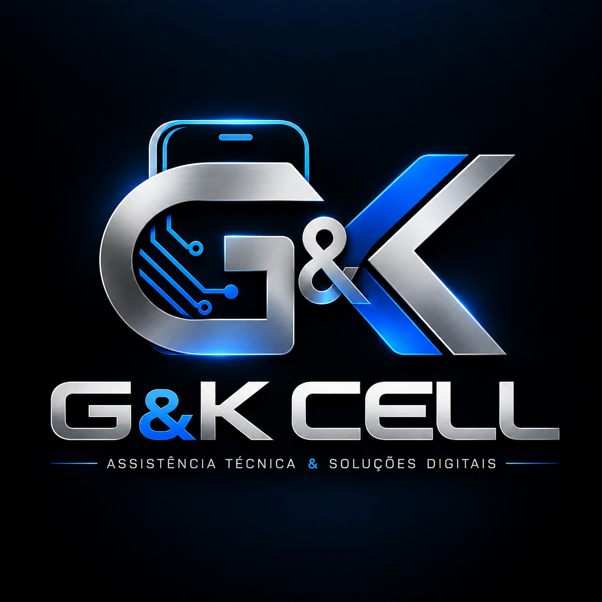

Você está sem conexão.
Os dados operacionais não são armazenados neste navegador. Reconecte para consultar informações atuais e protegidas.

Os dados operacionais não são armazenados neste navegador. Reconecte para consultar informações atuais e protegidas.